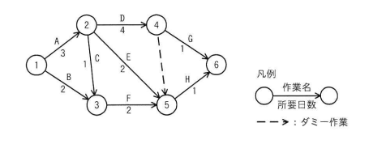

図のアローダイアグラムで表されるプロジェクトがある。結合点5の最早結合点時刻はプロジェクトの開始から第何日か。ここで，プロジェクトの開始日は0日目とする。
【アローダイアグラムの構造】
ア 4 イ 5 ウ 6 エ 7

エ：7
| 選択肢 | 内容 | 補足 |
|---|---|---|
| ア | 4 | 結合点5に至る経路のうち、A→E経路（3+2=5日）など一部の経路のみで計算した場合に近い、過小評価した値 |
| イ | 5 | A→E経路の所要日数（3+2=5日）をそのまま結合点5の最早結合点時刻とした場合に生じやすい誤り（他の経路を考慮していない） |
| ウ | 6 | B→F経路（2+2=4日）やA→C→F経路（3+1+2=6日）など、一部の経路のみで計算した場合に生じやすい値（A→D→ダミー経路を見落とした場合） |
| エ | 7 | 正解。結合点5に至る全ての経路（A→E：5日、B→F：4日、A→C→F：6日、A→D→ダミー：7日）のうち最も時間のかかる経路がA→D→ダミーの7日であり、bash_toolによる計算でも結合点5の最早結合点時刻は7と確認された |
出典：2024年度 春期 応用情報技術者試験 午前 問52（IPA）